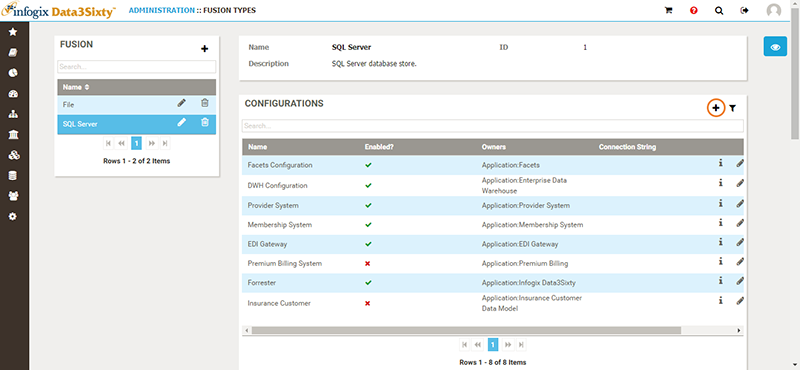

Once you have created a fusion type, the next step is to create a fusion configuration.

Note: If the Fusion agent is running, the Manual Process? option also marks the configuration as not available which prevents any scheduled executions from running.
Note: If you do not select Enabled?, the configuration will not execute.
In the Interval field, enter an appropriate integer for the interval timing, e.g. enter 1 to run the configuration once every hour or minute.
Caution: When configuring this connection, it is important to keep in mind how the connection will affect the entire system. It is highly recommended that you schedule jobs with a reasonable interval, taking into account how often data is updated. Infogix Data3Sixty Govern is scheduled to execute a job prior to the start of the business day so that data is current with the previous day's business processing. While it is possible to schedule this job to execute every minute, it is highly discouraged, as this can adversely affect system performance.
Application : Infogix Data3Sixty. This is an internal owner that facilitates the data flow in Infogix Data3Sixty.[TODO: UI no longer matches the existing integration guide. There are no Environment Name, Instance URL or Tenant ID fields. Do these options need to be configured elsewhere?]
Next topic: Creating a Fusion rule